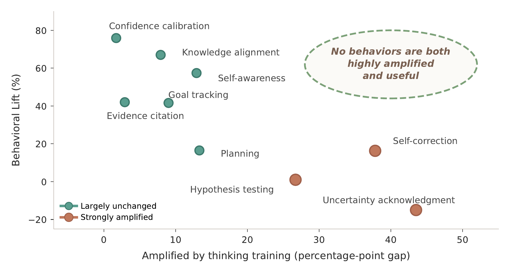
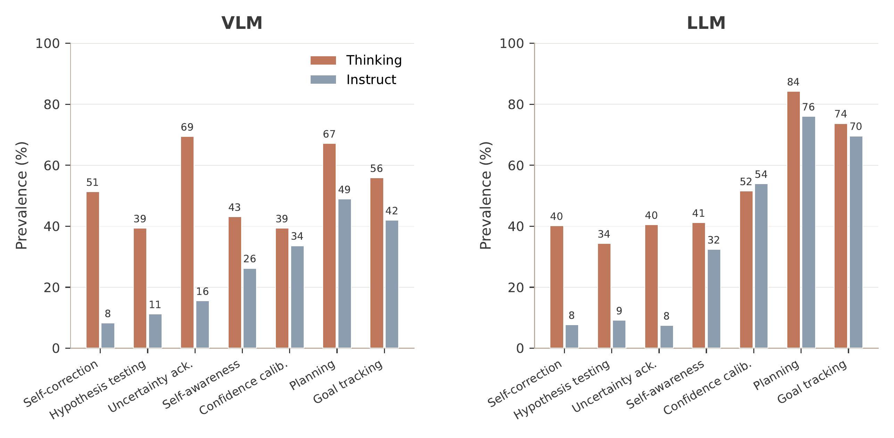
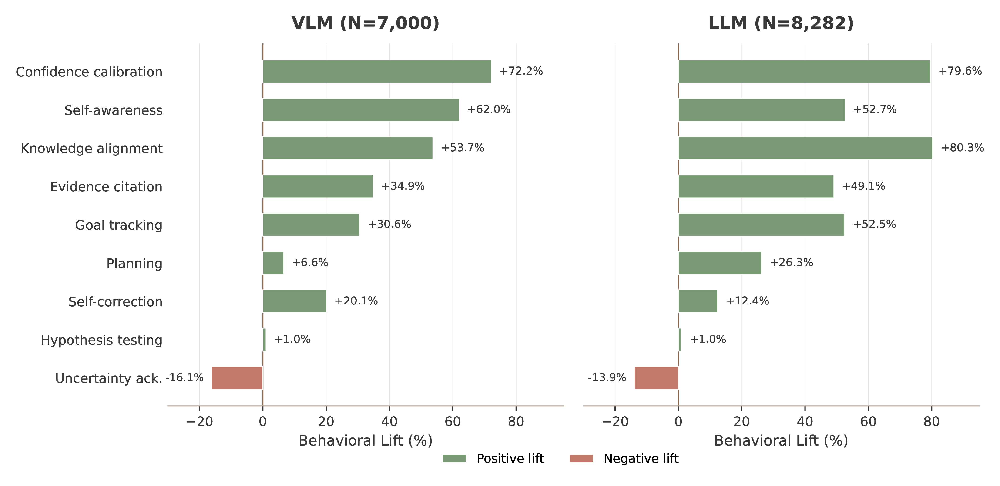
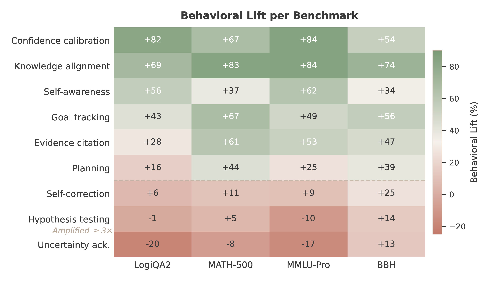
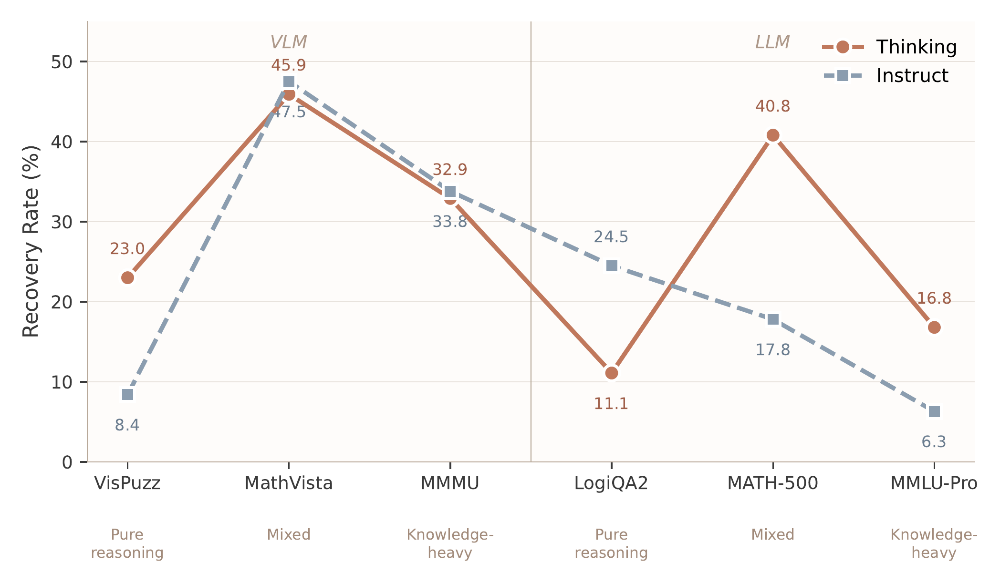
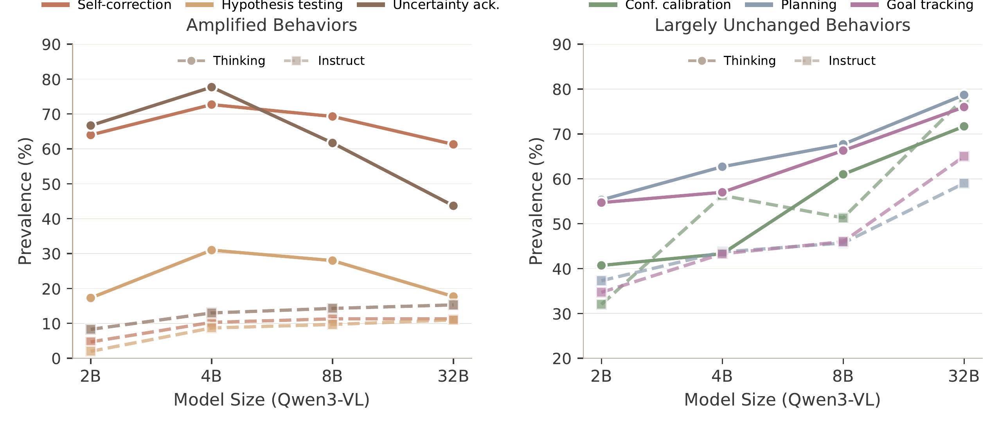
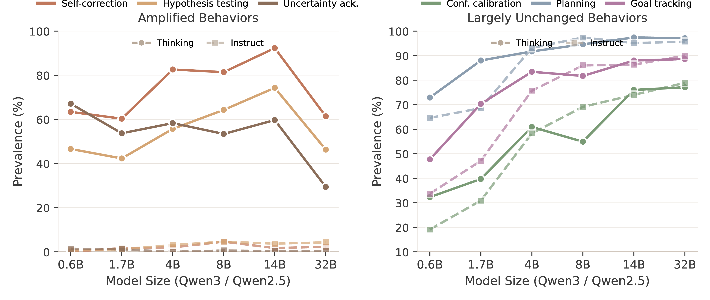

We separate what models do more often from what actually predicts success.
Across 15 open-weight LLMs and VLMs, 6 benchmarks, and 15,282 annotated reasoning traces, we ask whether reasoning-oriented training amplifies the behaviors most associated with correct answers. We find a consistent mismatch: thinking training strongly amplifies self-correction, hypothesis testing, and uncertainty acknowledgment, while the highest-lift behaviors are confidence calibration, knowledge alignment, and self-awareness.

Two simple measurements: behavior value and recovery after failure.
Accuracy tells us whether an answer is right. These metrics ask what the trace is doing along the way.
Measures how much correctness changes when a behavior appears in the trace. Lift separates prevalence from value.
Measures whether a model reaches the correct answer despite a detected reasoning failure.
Nine core behaviors, defined identically for LLM and VLM traces.
The taxonomy lets us compare language-only and vision-language reasoning using the same behavioral labels.
Thinking training amplifies correction, search, and uncertainty.
Thinking models produce far more self-correction, hypothesis testing, and uncertainty acknowledgment than instruct models. Confidence calibration and knowledge alignment move much less.


Amplified behaviors diverge from highest-lift behaviors.
Confidence calibration is the strongest positive signal of correctness in both modalities, but thinking training barely amplifies it. Uncertainty acknowledgment is heavily amplified, yet weakly or negatively associated with correctness.
| Behavior | VLM Lift | LLM Lift |
|---|---|---|
| Confidence calibration | +72.2 | +79.6 |
| Knowledge alignment | +53.7 | +80.3 |
| Self-awareness | +62.0 | +52.7 |
| Self-correction | +20.1 | +12.4 |
| Hypothesis testing | +1.0 | +1.0 |
| Uncertainty acknowledgment | -16.1 | -13.9 |
The lift ranking holds within benchmarks.
The mismatch survives within individual benchmarks. Confidence calibration and knowledge alignment remain high-lift across individual tasks, while uncertainty acknowledgment stays low or negative.
We also validate the ranking with same-question controls, hidden-state probes, and prompting interventions in the paper.


Thinking models often win through recovery rather than prevention.
On extended-reasoning tasks, thinking models reach correct answers after detected failures at 2-3x the rate of instruct models. But on LogiQA2, where fast recognition of logical form can be enough, instruct models recover better.
The amplification gap persists at scale.
Larger thinking models still strongly amplify self-correction and uncertainty behaviors. Meanwhile, confidence calibration converges and remains high-lift across model sizes.


Train and evaluate the behaviors that make reasoning reliable.
The practical lesson: use thinking models where they help, then audit the behaviors their traces reward.
A trace feature can become common after reasoning-oriented training while adding little correctness signal. Check whether correctness actually changes when it appears.
Uncertainty language alone cannot make a trace reliable. Useful uncertainty tracks evidence: confidence should rise and fall with the strength of the reasoning.
Thinking can help by preventing failures, recovering from them, improving calibration, or changing shortcuts. Accuracy alone hides these mechanisms.
Process supervision should reward grounded claims, appropriate domain framing, recognition of underspecified information, and recoverable reasoning instead of deliberative surface form alone.
Paper, code, annotations, and prompts.
We release the behavioral annotations, taxonomy definitions, judge prompts, and metric code for computing Behavioral Lift and Recovery Rate.
@article{nyandwi2026notallthinking,
title = {Not All Thinking Helps: Which Reasoning Behaviors Predict Correctness?},
author = {Nyandwi, Jean de Dieu and Mathur, Leena and Bisk, Yonatan and Neubig, Graham},
year = {2026}
}